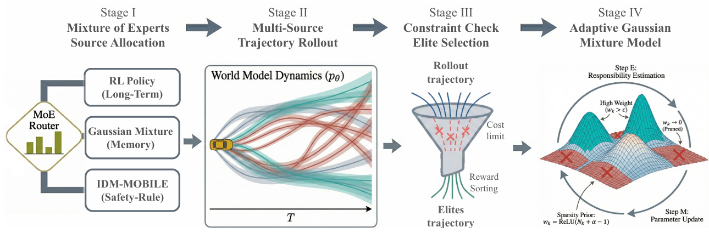

01 / WORLD MODEL
物理约束的多模态世界模型
融合视觉、激光雷达、车辆状态与道路信息，以循环状态空间模型建立连续表征；将车辆运动规律、道路边界和安全约束融入扩散推演，让预测更贴近真实驾驶条件。
多模态融合时序推演物理一致性

面向复杂动态交通中的未来状态难预测、长尾风险场景覆盖不足和实时决策安全性难兼顾三项挑战。
项目以世界模型为核心，将多模态环境表征、极端场景训测和风险感知决策串成一条闭环链路。系统在潜在空间推演交通参与者的未来变化，利用策略反馈寻找薄弱场景，再比较候选驾驶轨迹的收益与安全代价。

从可推演的环境底座，到主动发现风险，再到执行前的轨迹筛选。
融合视觉、激光雷达、车辆状态与道路信息，以循环状态空间模型建立连续表征；将车辆运动规律、道路边界和安全约束融入扩散推演，让预测更贴近真实驾驶条件。
依据策略的决策边界生成高价值交互场景，将闭环测试暴露的关键失效片段回流训练。场景随模型能力变化持续更新，形成“生成—测试—反馈—更新”的迭代机制。

长时学习、短时记忆与规则安全专家并行生成候选行为。世界模型预估未来收益与风险，再由混合高斯轨迹优化筛选可行方案，支持滚动决策与控制。

文稿记录了多平台验证、硬件在环测试与低速无人车部署。这里选取最能说明项目进展的结果。
Highway-Env、MetaDrive、nuPlan，覆盖高速交互、开放道路仿真与真实驾驶数据回放。
完成仿真、硬件在环及低速无人车测试，覆盖绕障、超车回道和动态交互避让。
相关方法已应用于自动驾驶算法挑战赛，成绩见项目文档。


从 MetaDrive 中的长轨迹规划，到实车部署与多视角车辆演示。